rectRectangular window
Exported from DSP.jl
StructuralVibration.jl provides a set of functions complementing the DSP.jl to simulate the signal processing pipelines used in structural dynamics applications, such as modal analysis, system identification, and vibration data processing. They can for instance be used to simulate or to process experimental data, which can then be used to validate new algorithms (direct or inverse methods) and to benchmark with existing ones.
The DSP.jl package provides a set of window functions that can be used to reduce spectral leakage in the frequency domain. The StructuralVibration.jl package exports the window functions defined in DSP.jl and provides additional ones for the sake of completeness.
The rectangular window is the simplest window function, which does not modify the signal. It is defined as: \[ w[n] = 1, \] for \(n \in [0, N-1]\), where \(N\) is the length of the window.
The rectangular window is generally not recommended for spectral analysis, as it introduces significant spectral leakage. It is mainly used for testing purposes or when no windowing is required (such as impact testing for sufficiently long acquisition duration).
rect
rectRectangular window
Exported from DSP.jl
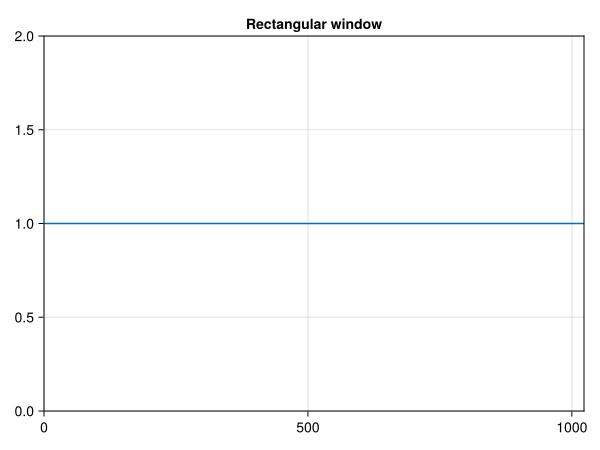
The Hann window is a raised cosine window that tapers the signal at both ends. It is defined as: \[ w[n] = \frac{1}{2} \left[1 - \cos\left(\frac{2\pi n}{N-1}\right)\right], \] where \(N\) is the length of the window and \(n \in [0, N-1]\).
hann
hannHann(ing) window
Exported from DSP.jl
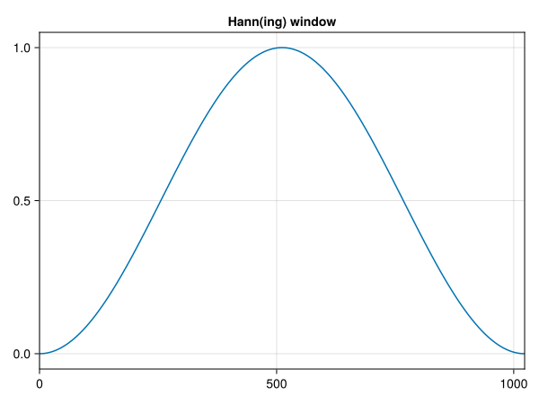
The Hamming window is a raised cosine window that tapers the signal at both ends. It is defined as: \[ w[n] = 0.54 - 0.46 \cos\left(\frac{2\pi n}{N-1}\right), \] where \(N\) is the length of the window and \(n \in [0, N-1]\).
hamming
hammingHamming window
Exported from DSP.jl
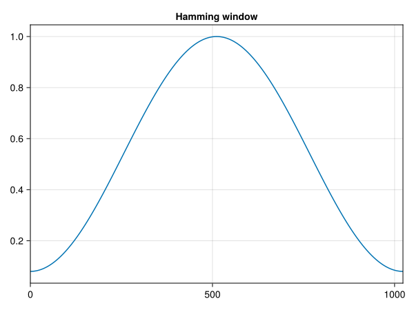
The Tukey window (also known as the cosine-tapered window) is defined by a tapering parameter \(\alpha \in [0,1]\), which controls the proportion of the window that is tapered. The window is defined as:
\[ \begin{align*} & w[n] = \frac{1}{2} \left[1 - \cos\left(\frac{2\pi n}{\alpha(N-1)}\right)\right], & 0 \leq n < \frac{\alpha(N-1)}{2} \\ & w[n] = 1, & \frac{\alpha(N-1)}{2} \leq n \leq \frac{(N-1)}{2} \\ & w[N-1 - n] = w[n], & 0 \leq n \leq \frac{\alpha(N-1)}{2} \\ \end{align*} \]
When \(\alpha = 0\), the Tukey window becomes a rectangular window, and when \(\alpha = 1\), it becomes equivalent to a Hann window.
tukey
tukeyTukey window
Exported from DSP.jl
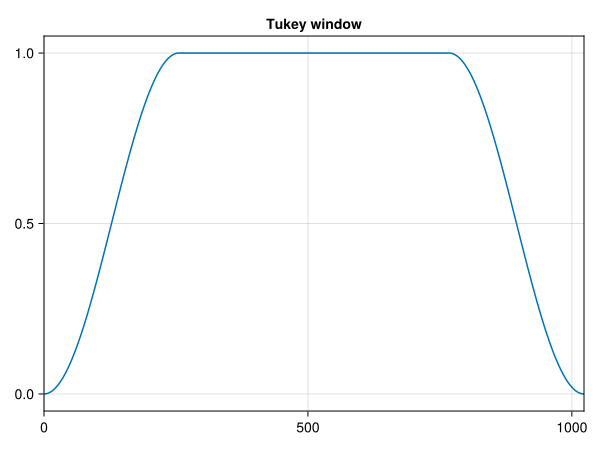
The cosine window is a raised cosine window that tapers the signal at both ends. It is defined as: \[ w[n] = \cos\left(\frac{\pi n}{N-1} - \frac{\pi}{2}\right), \] where \(N\) is the length of the window and \(n \in [0, N-1]\).
cosine
cosineCosine window
Exported from DSP.jl
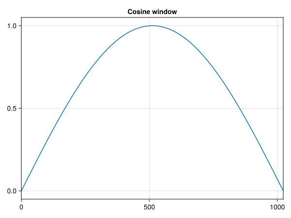
The Lanczos window is a raised cosine window that tapers the signal at both ends. It is defined as: \[ w[n] = \text{sinc}\left(\frac{2n}{N-1} - 1\right), \] where \(N\) is the length of the window and \(n \in [0, N-1]\).
lanczos
lanczosLanczos window
Exported from DSP.jl
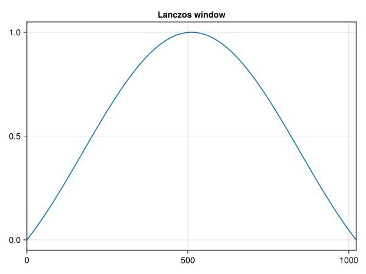
The triangular window is a simple window function that tapers the signal at both ends. It is defined as: \[ w[n] = 1 - \frac{|2n - (N-1)|}{L}, \] where \(L = N/N+1\) is \(N\) is even/odd and \(n \in [0, N-1]\).
triang
triangTriangle window
Exported from DSP.jl
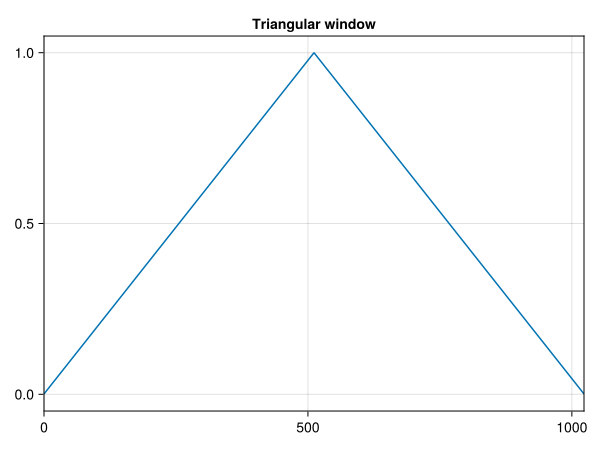
The Bartlett window is a triangular window that tapers the signal at both ends. It is defined as: \[ w[n] = \left(1 - \frac{|n - L|}{L}\right), \] where \(L = \frac{N-1}{2}\) and \(n \in [0, N-1]\).
bartlett
bartlettBartlett window
Exported from DSP.jl
The Bartlett-Hann window is a raised cosine window that tapers the signal at both ends. It is defined as: \[ w[n] = 0.62 - 0.48 \left|\frac{n}{N-1} - 0.5\right| + 0.38 \cos\left(2\pi\left[\frac{n}{N-1} - 0.5\right]\right), \] where \(n \in [0, N-1]\).
bartlett_hann
bartlett_hannBartlett-Hann window
Exported from DSP.jl
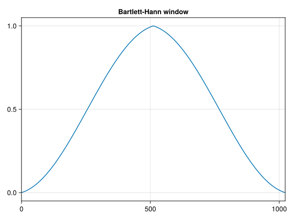
The Gaussian window is a raised cosine window that tapers the signal at both ends. It is defined as: \[ w[n] = \text{exp}\left(-\frac{(n - \mu)^2}{2\sigma^2}\right), \] where \(\mu = \frac{N-1}{2}\) is the center of the window, \(\sigma\) is the standard deviation, and \(n \in [0, N-1]\).
gaussian
gaussianGaussian window
Exported from DSP.jl
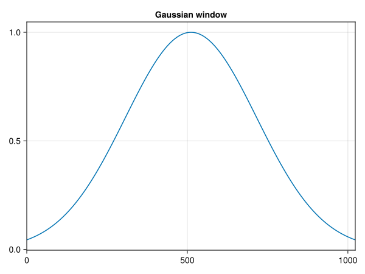
The Blackman window is a raised cosine window that tapers the signal at both ends. It is defined as: \[ w[n] = 0.42 - 0.5 \cos\left(\frac{2\pi n}{N-1}\right) + 0.08 \cos\left(\frac{4\pi n}{N-1}\right), \] where \(n \in [0, N-1]\).
blackman
blackmanBlackman window
Exported from DSP.jl
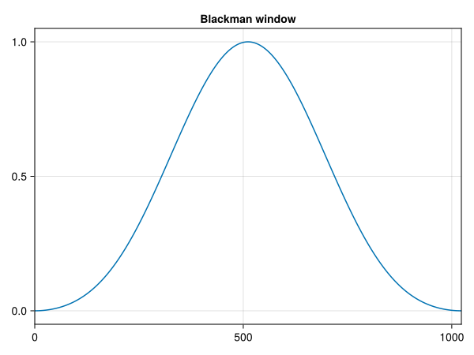
The Kaiser window is a raised cosine window that tapers the signal at both ends. It is defined as: \[ w[n] = I_0\left(\pi\alpha \sqrt{1 - \left(\frac{2n}{N-1} - 1\right)^2}\right) / I_0(\pi\alpha), \] where \(I_0\) is the modified Bessel function of the first kind, \(\beta\) is a parameter that controls the shape of the window, and \(n \in [0, N-1]\).
kaiser
kaiserKaiser window
Exported from DSP.jl
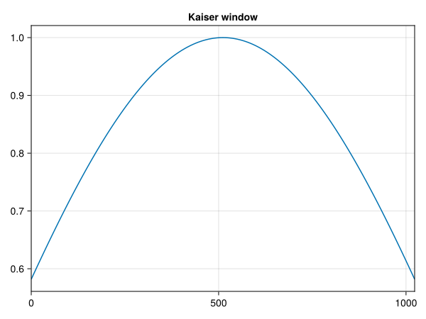
The DPSS (Discrete Prolate Spheroidal Sequences) window maximizes the energy concentration in the main lobe. It has no closed form expression and depends on two parameters: the length of the window \(N\) and the time-half-bandwidth product \(Nw\) which controls the energy concentration in the main lobe.
dpss
dpssDPSS window
Exported from DSP.jl
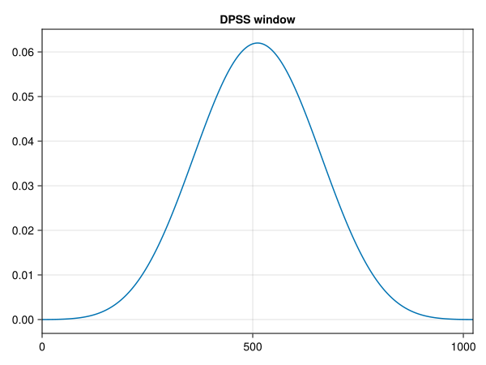
An exponential window is a window function that tapers the signal exponentially. It is defined as: \[ w[n] = \text{exp}\left(-\frac{\tau n}{N-1}\right), \] where \(n \in [0, N-1]\), \(\tau = -\log(p)\) is the time constant, and \(p\) is the percentage of the original value by the end of the acquisition block.
exponential
exponential(N, exponential_end = 0.01)Create an exponential window
Inputs
N: Number of points
exponential_end: End value of the exponential window (between 0 and 1)
Output
w: Exponential window
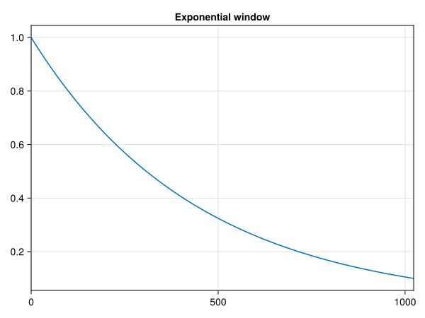
The force window is a window function a rectangular window over a given width. It is defined as: \[ w[n] = \begin{cases} 1, & 0 \leq n < L \\ 0, & L \leq n < N \end{cases}, \] where \(n \in [0, N-1]\), \(L = pN\) is the width of the window, and \(p\) is the percentage of the length of the data acquisition block.
force
force(N, width = 0.1)Create a force window
Inputs
N: Number of points
width: Width of the force window (between 0 and 1)
Output
w: Force window
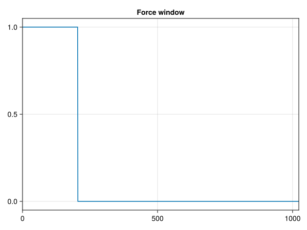
The flat-top window is a window function that window is a partially negative-valued window that has minimal scalloping loss in the frequency domain. It is defined as: \[ w[n] = a_0 - a_1\cos\left(\frac{2\pi n}{N-1}\right) + a_2\cos\left(\frac{4\pi n}{N-1}\right) - a_3\cos\left(\frac{6\pi n}{N-1}\right) + a_4\cos\left(\frac{8\pi n}{N-1}\right), \] where \(n \in [0, N-1]\) and \(a_0 = 0.21557895\), \(a_1 = 0.41663158\), \(a_2 = 0.277263158\), \(a_3 = 0.083578947\), and \(a_4 = 0.006947368\).
flattop
flattop(N)Create a flat top window
Input
N: Number of points
Output
w: Flattop window
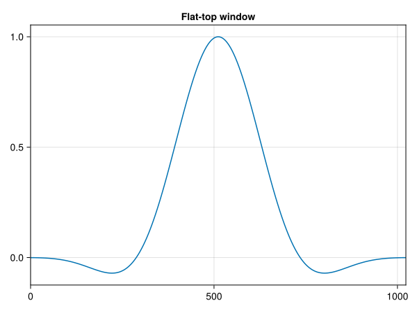
The Nutall window is a window function that returns a Nuttall four-term symmetric Blackman-Harris window. It produces slightly lower sidelobes than Blackman-Harris window. It is defined as: \[ w[n] = a_0 - a_1\cos\left(\frac{2\pi n}{N-1}\right) + a_2\cos\left(\frac{4\pi n}{N-1}\right) - a_3\cos\left(\frac{6\pi n}{N-1}\right), \] where \(n \in [0, N-1]\) and \(a_0 = 0.355768\), \(a_1 = 0.487396\), \(a_2 = 0.144232\), and \(a_3 = 0.012604\).
nuttall
nuttall(N)Create a Nuttall window
Input
N: Number of points
Output
w: Nuttall window
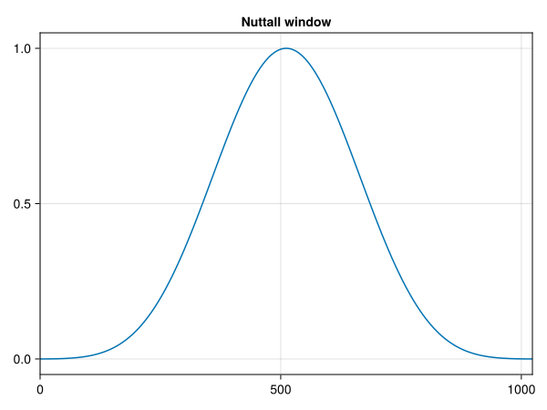
The Blackman-Nuttall window is a window function that is a modified version of the exact Blackman window. It is defined as: \[ w[n] = a_0 - a_1\cos\left(\frac{2\pi n}{N-1}\right) + a_2\cos\left(\frac{4\pi n}{N-1}\right) - a_3\cos\left(\frac{6\pi n}{N-1}\right), \] where \(n \in [0, N-1]\) and \(a_0 = 0.3635819\), \(a_1 = 0.4891775\), \(a_2 = 0.1365995\), and \(a_3 = 0.0106411\).
blackman_nuttall
blackman_nuttall(N)Create a Blackman-Nuttall window
Input
N: Number of points
Output
w: Blackman-Nutall window
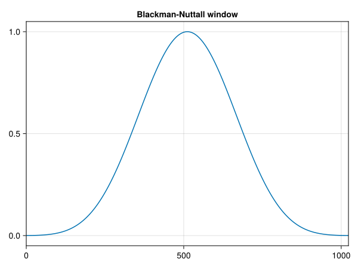
The Blackman-Harris window is a window function that is another modified version of the exact Blackman window. It is defined as: \[ w[n] = a_0 - a_1\cos\left(\frac{2\pi n}{N-1}\right) + a_2\cos\left(\frac{4\pi n}{N-1}\right) - a_3\cos\left(\frac{6\pi n}{N-1}\right), \] where \(n \in [0, N-1]\) and \(a_0 = 0.35875\), \(a_1 = 0.48829\), \(a_2 = 0.14128\), and \(a_3 = 0.01168\).
blackman_harris
blackman_harris(N)Create a Blackman-Harris window
Input
N: Number of points
Output
w: Blackman-Harris window
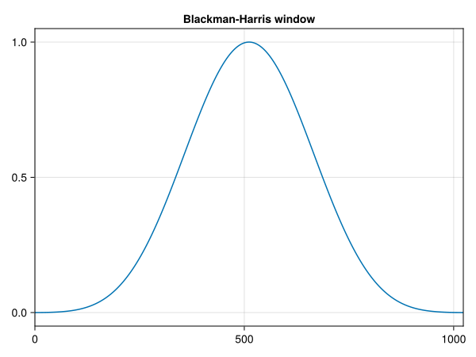
The parzen window is a window function is defined as: \[ w[n] = \begin{cases} 1 - 6\left(\frac{2|n - M|}{N}\right)^2\left(1 - \frac{2|n - M|}{N}\right) & 0 \leq |n - M| \leq \frac{M}{2}\\ 2\left(1 - \frac{2|n - M|}{N}\right)^3 & \frac{M}{2} < |n - M| \leq M\\ \end{cases} \] where \(M = \frac{N - 1}{2}\) and \(n \in [0, N-1]\).
parzen
parzen(N)Create a Parzen window
Input
N: Number of points
Output
w: Parzen window
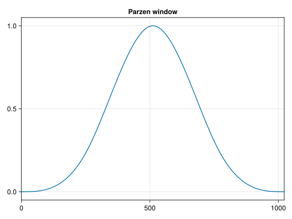
The Planck-taper window is a window function that is defined as: \[ w[n] = \begin{cases} 0, & n = 0 \\ (1 + \text{exp}\left(\frac{\epsilon N}{n} - \frac{\epsilon N}{\epsilon N - n}\right)), & 1 \leq n < \epsilon N \\ 1, & \epsilon N \leq n < N/2 \\ w[N - n], & 0 \leq n < N/2 \\ \end{cases}, \] where \(n \in [0, N-1]\) and \(\epsilon\) is a parameter, defined in [0, 1] that controls the amount of tapering
planck
planck(N, ϵ = 0.25)Create a Planck-taper window
Inputs
N: Number of points
ϵ: Parameter controlling the tapering
Output
w: Planck-taper window
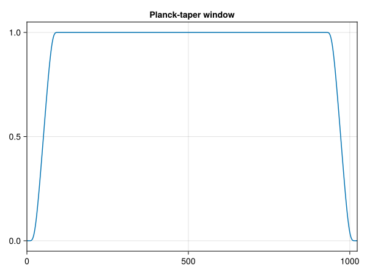
The choice of a window function depends on the application and the desired properties of the window1 2 3. Here are some general guidelines for the main windows used in structural dynamics applications:
Rectangular window: This window is suitable for signals which are periodic in the acquisition window or for non-periodic signals which tend to 0 whithin the time window (such as impact testing).
Hann window: This window is suitable for noisy signals. It is generally used with random signal due to its moderate impact on the frequency resolution and amplitude accuracy of porcessed signals.
Hamming window: This window is used in case of noisy measured signals as the Hann windows. However, contrary to the Hann window, the Hamming window doesn’t reach zero at its both ends.
Tukey window: This window is generally used to analyze transient data due to its shape, since it limits the alteration of the amplitude of transient signals.
Blackman-Harris window: This window is suitable for periodic measurement signals.
Flat-top window: This window is suitable for a calibration purposes (good reproduction of the amplitude height) and for measurements with sine excitation. However, it is not suitable for very noisy measurement signals.
Force window: This window is an effective mechanism for reducing noise on the input channel when the input signal is impulsive.
Exponential window: This window is suitable for transient signals that decay to zero, such as acceleration signal in impact testing.
Several functions can be estimated from the time domain data when operating in the frequency domain.
The StructuralVibration.jl package provides functions to estimate some of the most common functions used in structural dynamics applications. All the functions listed below are based on the Welch’s method and include the option to use a window function (+ its correction factor) to reduce spectral leakage and signal overlapping to reduce the variance of the estimated function or to compensate for the windowing effect.
When acquiring data, the user has to define the sample rate \(f_s\) and the block size \(b_s\). The sample rate is the number of samples per second (in Hz), and the block size is the number of samples in each block. The block size is usually a power of 2, which allows for efficient computation of the FFT. From these two parameters, it is posiible to define the following parameters:
Sampling period: The sampling period (in s) is the time between two consecutive samples. It is defined as: \[ \Delta t = \frac{1}{f_s}. \]
Acquisition duration: The acquisition duration (in s) is the time taken to acquire a block of data. It is defined as: \[ T = b_s \Delta t = \frac{b_s}{f_s}. \]
Frequency resolution: The frequency resolution (in Hz) is the smallest frequency difference that can be resolved in the frequency domain. It is defined as: \[ \Delta f = \frac{f_s}{b_s}. \]
Maximum frequency: The maximum frequency (in Hz) is the highest frequency that can be resolved in the frequency domain and satisfying the Nyquist theorem. It is defined as: \[ f_{max} = \frac{f_s}{2.56}. \]
All these parameters are implemented in the FFTParameters struct, which is used in the functions to estimate the functions listed below.
FFTParameters
FFTParametersStructure to store the time and frequency parameters for the FFT analysis
Constructor
fs::Real: Sampling rate of the signal
bs::Real: Block size of the signal
pow2::Bool: Flag for finding the next power of 2
Fields
t::AbstractRange: Time vector
dt::Float64: Time step
tspan::Tuple{Float64, Float64}: Time span
freq::AbstractRange: Frequency vector
df::Float64: Frequency resolution
freq_span::Tuple{Float64, Float64}: Frequency span
fs::Int: Sampling rate
bs::Int: Block size
The response spectrum is basically the Fourier transform of the response of a system to a given input.
spectrum
spectrum(input_signal, bs::Int, window = hanning(bs); fs::Int = 1,
overlap = 0.5)Estimation of the spectrum of a signal
Inputs
input_signal::Vector{Real}: Input signal
bs::Int: Block size
window: Window function
fs::Int: Sampling rate
overlap: Overlap ratio between the segments
Outputs
y: Signal spectrum
freq: Frequency range
Available window functions
From DSP.jl
rect
hann (default)
hamming
tukey
cosine
lanczos
triang
bartlett
gaussian
bartlett_hann
blackman
kaiser
dpss
From StructuralVibration.jl
exponential
force
flattop
nutall
blackman_nutall
blackman_harris
parzen
planck
# Structural parameters
m = 1.
f0 = 25.
ξ = 0.1
sdof = Sdof(m, f0, ξ)
# Acquisition parameters
sample_rate = 256
block_size = 1024
fft_params = FFTParameters(sample_rate, block_size)
freq = fft_params.freq
t = fft_params.t
# Excitation signal generation
F0 = 10.
chirp = SweptSine(F0, t[1], 0.8t[end], freq[1], freq[end], zero_end = true)
x = excitation(chirp, t)
# Reference signal
prob = SdofForcedTimeProblem(sdof, x, [0., 0.], t)
y = solve(prob).u
# Frequency domain
Fx = Fx = rfft(x)[1:length(freq)]/block_size
Fx[2:end] .*= 2.
# Response spectrum
prob_y = SdofFrequencyProblem(sdof, Fx, freq)
u = solve(prob_y).u
# Spectrum stimation
uest = spectrum(y, block_size, rect(block_size), fs = sample_rate)[1]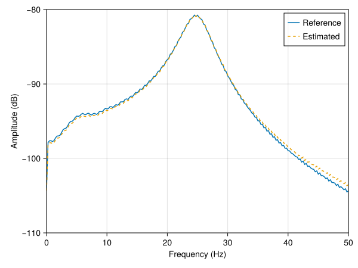
Autopower functions are used to estimate the power of a signal in the frequency domain. StructuralVibration.jl allows to compute the following autopower functions:
For a detailed discussion on the differences between these functions, please refer to this excellent blogpost The Autopower function… Demystified!.
welch
welch(input_signal, bs::Int, window = hanning(bs); fs::Int = 1,
overlap = 0.5, scaling = :psd)Estimation of one-sided Autopower functions of a signal using the Welch method
Inputs
input_signal::Vector{Real}: Input signal
bs::Int: Block size
window: Window function
fs::Int: Sampling rate
overlap: Overlap ratio between the segments
scaling: Scale of the PSD - see https://community.sw.siemens.com/s/article/the-autopower-function-demystified for more information
:psd (default) - Power Spectral Density
:esd - Autopower Energy Spectral Density
:spectrum - Autopower spectrum
:linear - Autopower linear
Outputs
pxx: Autopower
freq: Frequency range
Available window functions
From DSP.jl
rect
hann (default)
hamming
tukey
cosine
lanczos
triang
bartlett
gaussian
bartlett_hann
blackman
kaiser
dpss
From StructuralVibration.jl
exponential
force
flattop
nutall
blackman_nutall
blackman_harris
parzen
planck
Note The welch function is already implemented in DSP.jl under the name welch_pgram. The function welch is implemented here for pedagogical purposes.
This example is based on the one provided in the DSP.jl documentation. It generates a signal composed of two sine waves at 100 Hz and 150 Hz with amplitudes equal to 1 and 2 respectively, and then estimates the power spectral density using the Welch method.
# Acquisition parameters
fs = 1000
bs = 100
fft_params = FFTParameters(fs, bs, pow2 = false)
freq = fft_params.freq
t = (1:fs)/fs
# Signal generation
f = [100 150] # 100Hz & 150Hz frequencies
A = [1; 2] # Amplitudes
x = sin.(2π*f.*t)*A + randn(1000)
# PSD estimation from DSP.jl
psd = DSP.welch_pgram(x, bs; fs = fs, window = hamming)
pxx_ref = DSP.power(psd)
# PSD estimation from StructuralVibration.jl
pxx = welch(x, bs, hamming(bs), fs = fs)[1]The frequency response function (FRF) is the relation between an input \(x\) and the resulting output \(y\) of a linear and time-invariant system. Independent of the input, it is an intrinsic property of the system describing its dynamic behavior w.r.t. the frequency.
In practice, the FRF is computed from estimators. In StructuralVibration.jl, the following estimators are implemented:
Generally, the H1 estimator estimates the anti-resonances better than the resonances4. Furthermore, as the number of averages increases, the H1 estimator converges to the true FRF.
Contrary to the H1 estimator, the H2 estimator estimates the resonances better than the anti-resonances.
This estimator offers a good compromise between the H1 and H2 estimators, but it is not as commonly used as the H1 and H2 estimators.
It generally provides the best overall estimate of the FRF, because the geometric mean is less sensitive to outliers than the arithmetic mean.
These estimators are generally completed by other information such as the coherence function, which an averaged function that how much the output is linearly related to the input. In this sense, it can be an indicator of the quality of the FRF estimate. It can also serve to check the repeatability of individual FRF estimates. It is expressed as: \[ \gamma^2(\omega) = \frac{S_{yx}^2(\omega)}{S_{xx}(\omega) S_{yy}(\omega)} = \frac{H_1(\omega)}{H_2(\omega)}, \] where \(S_{yx}(\omega)\) is the cross-power spectral density between the input and output signals, and \(S_{xx}(\omega)\) and \(S_{yy}(\omega)\) are the power spectral densities of the input and output signals respectively.
In absence of averaging, the coherence is equal to 1 over all the frequency range!
tfestimate
tfestimate(input_signal, output_signal, bs::Int, window_input = hanning(bs),
window_output = window_input; fs::Int = 1, overlap = 0., type = :h1)Estimation of the one-sided transfer function between two signals
Inputs
input_signal::Vector{Real}: Input signal
output_signal::Vector{Real}: Output signal
bs::Int Block size
window_input: Window function for the input signal
window_output: Window function for the output signal
fs::Int: Sampling rate
overlap::Real: Overlap ratio between the segments
type::Symbol: Type of transfer function to estimate
:h1 (default)
:h2
:h3 - h3 = (h1 + h2)/2
:hv - hv = sqrt(h1*h2)
Outputs
H: Transfer function
freq: Frequency range
coh: Coherence
Available window functions
From DSP.jl
rect
hann (default)
hamming
tukey
cosine
lanczos
triang
bartlett
bartlett_hann
gaussian
blackman
kaiser
dpss
From StructuralVibration.jl
exponential
force
flattop
nutall
blackman_nutall
blackman_harris
parzen
planck
# Structural parameters
m = 1.
f0 = 25.
ξ = 0.1
sdof = Sdof(m, f0, ξ)
# Acquisition parameters for one block
sample_rate = 256
block_size = 1024
fft_params = FFTParameters(sample_rate, block_size)
# Reference FRF
freq = fft_params.freq
prob_frf = SdofFRFProblem(sdof, freq)
H = solve(prob_frf).u
# Signal generation - Input signal
nblocks = 5
tb = fft_params.t
dt = fft_params.dt
t = tb[1]:dt:(nblocks*(tb[end] + dt) - dt)
F0 = 10.
chirp = SweptSine(F0, tb[1], 0.8tb[end], freq[1], freq[end], zero_end = true)
x = repeat(excitation(chirp, tb), outer = nblocks)
# Signal generation - Output signal
prob = SdofForcedTimeProblem(sdof, x, [0., 0.], t)
y = solve(prob).u
# FRF estimation
win = tukey(block_size, 0.25)
H1 = tfestimate(x, y, block_size, win, fs = sample_rate, overlap = 0.)[1]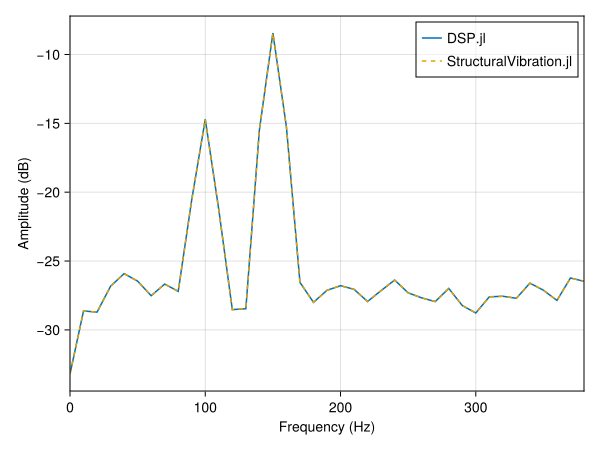
M+P International, “M+P Analyzer. User Manual Revision 5.1”. 2017.↩︎
Polytec, “Polytec Scanning Vibrometer, Theory Manual”. 2019.↩︎
P. Avitabile, “Modal Testing: A practioner’s guide”. John Wiley & Sons. 2018.↩︎
Simcenter Testing Knowledge. “What is a Frequency Response Function (FRF)?”. 2020. link↩︎